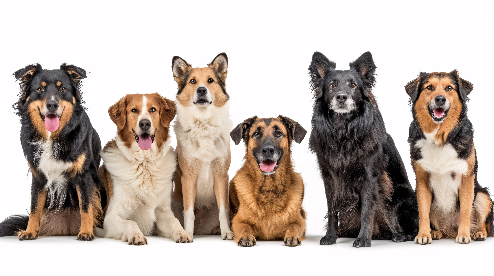
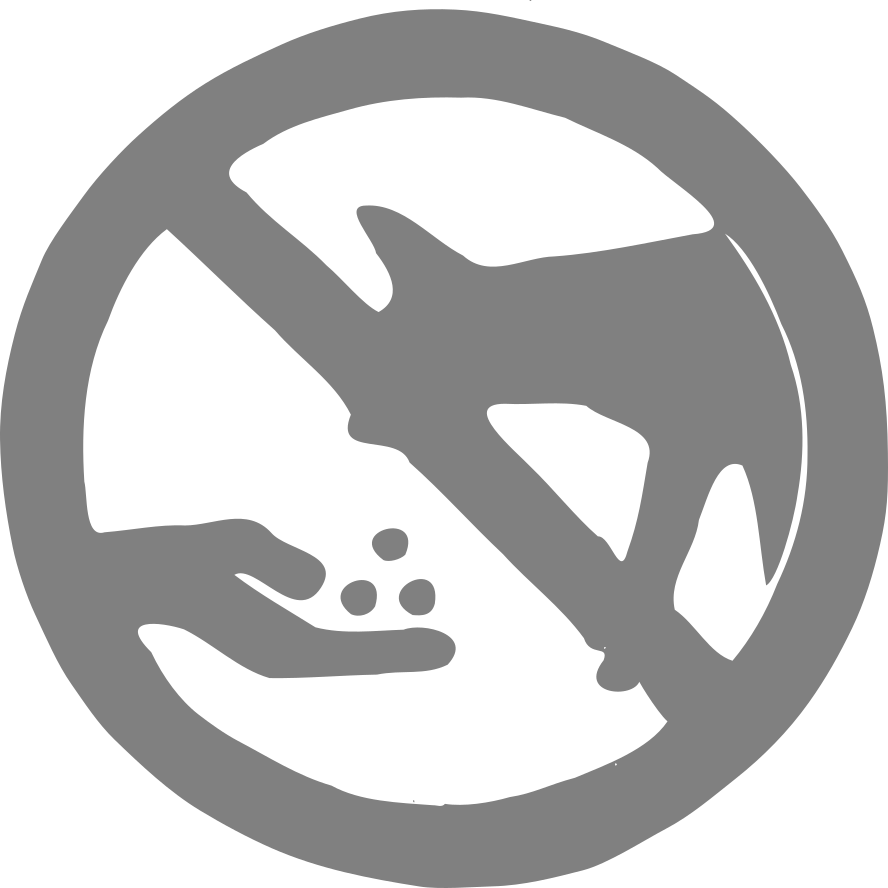
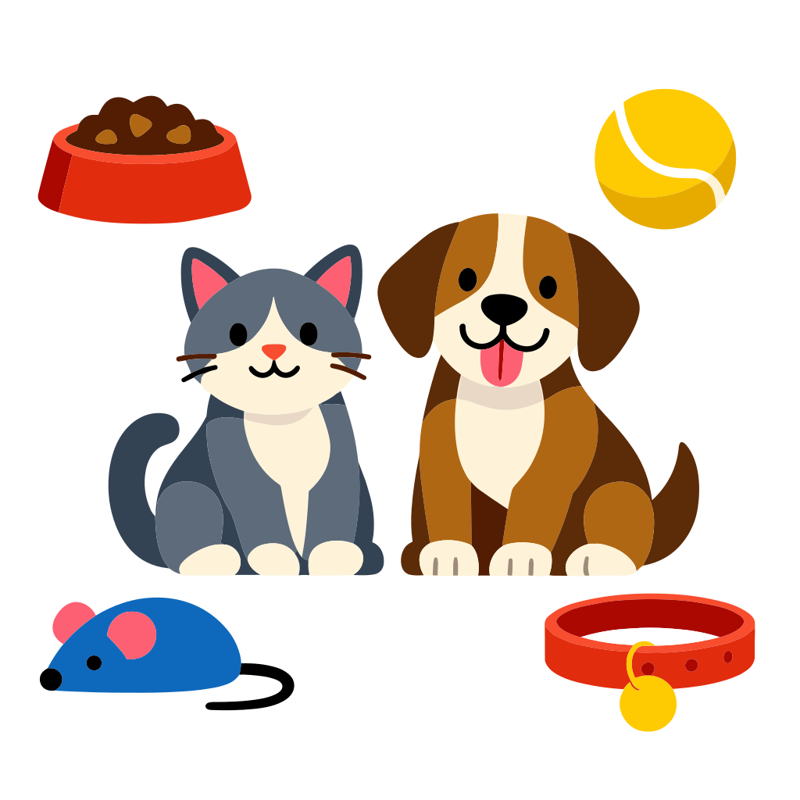

Quando pensamos em adotar ou ter um cachorro, muitas vezes a primeira pergunta que surge é:
qual raça combina mais comigo?
Embora todo cachorro mereça amor e cuidado, cada raça possui características próprias que influenciam
comportamento, necessidades físicas e sociais.
Conhecer essas diferenças é essencial para garantir o bem-estar do seu pet e a harmonia do lar.
O porte de um cachorro influencia diretamente em sua rotina e espaço necessário.
Cada raça possui tendências comportamentais que podem ajudar ou dificultar a convivência:
O nível de atividade varia bastante entre as raças:
A pelagem também é um fator determinante:
Algumas raças são mais propensas a problemas de saúde específicos:
Escolher a raça certa envolve combinar o estilo de vida humano com as características do
cachorro.
Antes de adotar, pesquise bem sobre temperamento, necessidades físicas, sociais e de saúde.
Lembre-se: cada cachorro é único, e mesmo dentro de uma raça, há diferenças individuais.
O amor, atenção e cuidados diários farão toda a diferença no desenvolvimento e felicidade
do seu amigo de quatro patas.
Para saber mais sobre raças, acesse: Guia de Raças - Royal Canin

Contém teobromina, que pode causar vômito, convulsões e até morte.
Podem causar insuficiência renal, mesmo em pequenas quantidades.
Afetam o sangue do cachorro e podem causar anemia.
O xilitol pode causar queda de açúcar no sangue e problemas no fígado.
Aumentam o ritmo cardíaco e podem causar intoxicação.
Extremamente tóxico, pode afetar o sistema nervoso rapidamente.
Contém persina, que pode ser tóxica para alguns animais.
Podem quebrar e machucar o intestino ou causar engasgo.
Pode causar desidratação e problemas nos rins.
Muitos cães têm intolerância à lactose.
Veja a lista completa de alimentos proibidos em: Blog Petz - Royal Canin

A socialização é o processo de acostumar o animal com
diferentes
pessoas, ambientes, sons e outros animais.
Isso é essencial porque:
O ideal é socializar desde filhote,
pois nessa
fase eles aprendem mais rápido.
Introduza novos ambientes e pessoas aos poucos.
Evite forçar situações que gerem medo
Use petiscos, carinho e elogios quando o animal se
comportar bem
isso ajuda a criar associações positivas
Sempre de forma supervisionada.
Prefira animais calmos no início
Sons como aspirador, carro e campainha devem
ser introduzidos gradualmente
Aprenda mais sobre socialização em: Blog Cobasi - Convivência Animal